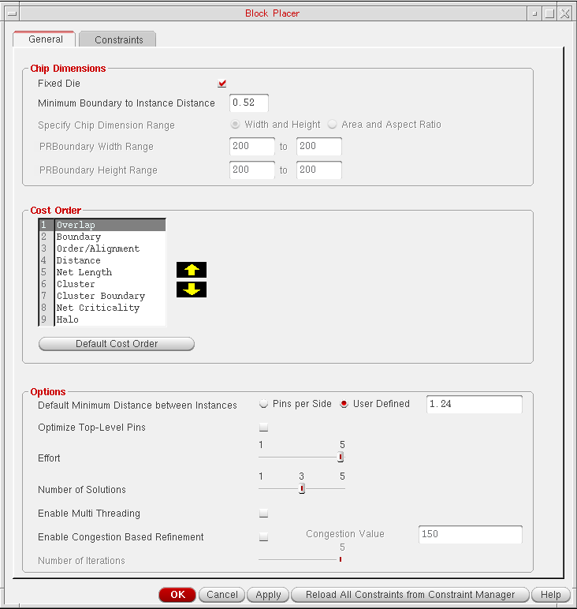
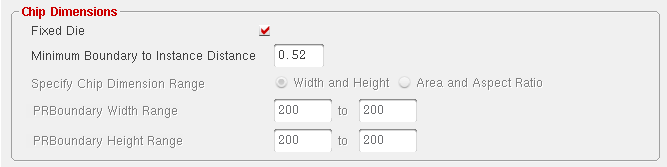
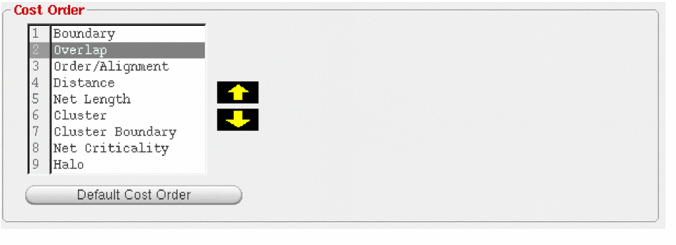
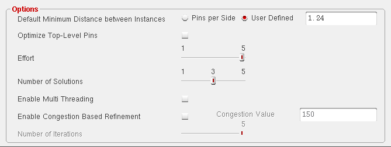
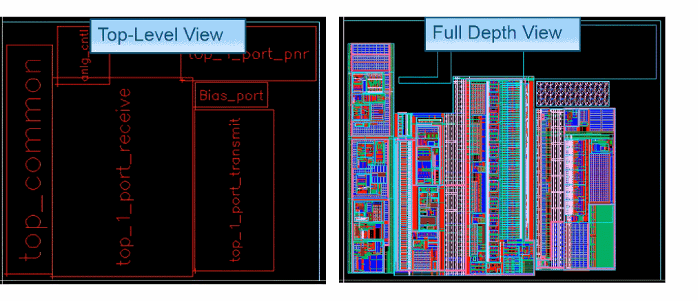

Specifying Block Placer Generic Settings
To specify generic setting options in the block placer:
-
Choose Floorplan – Block Placer – Place Blocks.
The Block Placer form appears.
In Layout EXL and higher tiers, choose Plan – Block Planning – Place Blocks.
The General tab is displayed by default. This tab provides settings that you can use to place blocks. -
In the Chip Dimensions section, select Fixed Die to specify that block placer cannot alter the chip dimensions.
 - Select Minimum I/O to Core Distance to specify the distance between the IOBox and the coreBox (the spacing between the pads and the blocks).
- Select Minimum Boundary to Instance Distance to specify the minimum distance between the design boundary and instance edge.
- Select Specify Chip Dimension Range to specify the method that you want to use to define the dimensions of the chip by using Width and Height and Area and Aspect Ratio options.
- Select the Width and Height option button to specify the width and the height range of the chip. Selecting the Width and Height option, activates PRBoundary Width Range and PRBoundary Height Range options.
- Select PRBoundary Width Range to specify the minimum and maximum width of the chip in this field, and select PRBoundary Height Range to specify the minimum and maximum height of the chip in this field.
-
In the Cost Order section, block placer uses the cost order field while minimizing cost. The cost with the highest priority is minimized first. You can modify the cost order priority by using the arrow keys. You can also reload the default cost order priority by clicking the Cost Order button as shown in the graphic.
 -
In the Options section, select Default Minimum Distance between Instances to specify the default minimum distance between the instances in this field by specifying the value in the User Defined field.
 - Select Optimize Top-Level Pins if you want block placer to optimize the top-level pins after block placement.
- Select Effort to specify the effort that block placer should make before arriving at the possible solutions.
- Select Number of Solutions to specify the number of solutions that you want block placer to generate. Block placer can generate multiple solutions in a single execution.
- Select Enable Multi Threading to reduce the time taken by the block placer to place a large number of macros.
- Select Enable Congestion Based Refinement to replace all opens with global routes and re-routes to reduce congestion. This checkbox is enabled only if congestion data is available.
- Select Number of Iterations to specify the maximum number of iterations that can be performed between the congestion-based refinement block placer and the Global Router to bring congestion within the limits.
- Specify the constraints that you want block placer to use to converge on a solution in the Constraints tab.
- Click OK or Apply.
Block placer runs on the entire design and places the blocks in the PR boundary. The possible placement results are displayed in the following image.

Related Topics
Adding, Updating, and Deleting Soft Block Constraints
Adding, Updating, and Deleting Instance Constraints
Adding, Updating, and Deleting Instance To Boundary Constraints
Adding, Updating, and Deleting Relative Constraints
Return to top